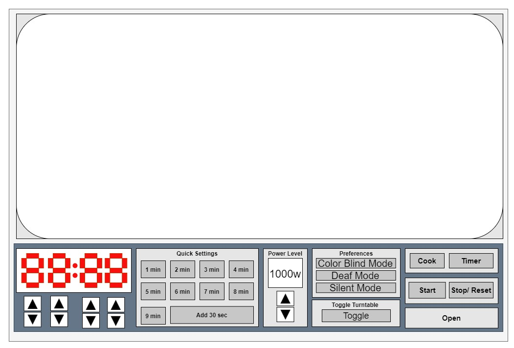

Project Report
C Grade Section
-
Apartment Microwave
-
Using the Control Interface

-
Issues and Explanations
- Poor user feedback - Buttons are not tacktile, and the sound is not very loud
- Quick time only on first 5 buttons - Requires user extra steps for longer cooking
- Low options - The top quick options are limited, and require figuring out to use
- Multiple button sequence to enter percisely - If you want a specific time you must add
extra buttons to finish your task
- No explinations/information - The only guide is inside the microwave door, and is very
basic
- Power level entry - Requires entry of allowed power level, instead of cycling through
options
- No back button - If you make a mistake, you must restart
B Grade Section
-
Common/Rare Uses
- Common - Reheating/Warming food - Interface allows for quick heating through quick
buttons, but takes longer for specific time entry/power change
- Common - Melting ingredients(Butter, Sauce...etc) - The shorter quick options(1min/3sec)
aid in quick entry
- Common - Use as kitchen timer - Doesn't allow quick entry, so you are required to hit
more buttons
- Common - Heating/Boiling water for tea/coco - Quick options allow easy entry, but a
option for liquids would make it more convenient
- Rare - Defrosting food - Have to look inside the microwave for the correct option to
enter
-
Sequence of Actions
- Hit quick time option -> wait for timer to expire -> hit door open button -> done
- Hit time cook -> enter percise time -> hit start -> wait for timer to expire -> hit door
open button -> done
- Use as timer -> hit kitchen timer -> enter percise time -> hit start -> wait for timer
to expire -> hit cancel/esc -> done
-
User Support
- This microwave has a small sheet on how to use inside the microwave, but doesn’t cover
all of the functions (Only the reheat snack button/basic time entry). So as a user I had
to figure out the power level, defrost, cook,
and reheat functions. This took time of basically hitting random buttons until something
happened. Then as a user you are required to remember thease sequences for next time.
Since I do not use these functions often, I have forgotten how to utilize them. So next
time I will have to use trial/error again.
-
User Feedback
- Sound - Sound is the only feedback you recieve with the above microwave. This requires
the user to listen for an auditory response to their actions.
-
Common User Mistakes
- Entering the wrong time - Since the time is entered right->left and there is no back
button, the user has to stop and restart to enter the corrected time.
- Not using correct power setting - The power setting is not listed on the screen, so as a
user you have to double check on your own. I have use too low/high of a power setting a
few times.
-
Improvement - Low-Fidelity Prototype

- Simplistic design, go left to right to complete any function. Set time, power, mode, and
then start. Once done, open.
- Easily able to edit errors since each digit is imputted individually.
- Easily able to change power level.
- Quick settings allow for any time entry, and addition of 30 seconds easily.
- Color blind mode will toggle through differeny color sets to allow visually impaired to
still utilize the microwave.
- Deaf mode will flash the touch screen at a rate of 2HZ to alert the user, instead of
using sound as the alert.
- Silent mode allows for use of microwave at night or when needing to be quite.
- The main functions are also enlarged versus normal microwave, this allows visual
impaired to use without struggle.
A Grade Section